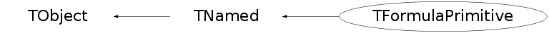

class TFormulaPrimitive: public TNamed
The Formula Primitive class
Helper class for TFormula to speed up TFormula evaluation
TFormula can use all functions registered in the list of TFormulaPrimitives
User can add new function to the list of primitives
if FormulaPrimitive with given name is already defined new primitive is ignored
Example:
TFormulaPrimitive::AddFormula(new TFormulaPrimitive("Pow2","Pow2",TFastFun::Pow2));
TF1 f1("f1","Pow2(x)");
TFormulaPrimitive is used to get direct acces to the function pointers
GenFunc - pointers to the static function
TFunc - pointers to the data member functions
The following sufixes are currently used, to describe function arguments:
G - generic layout - pointer to double (arguments), pointer to double (parameters)
10 - double
110 - double, double
1110 - double, double, double
Function Members (Methods)
public:
| TFormulaPrimitive() | |
| TFormulaPrimitive(const char* name, const char* formula, TFormulaPrimitive::GenFunc0 fpointer) | |
| TFormulaPrimitive(const char* name, const char* formula, TFormulaPrimitive::TFunc0 fpointer) | |
| TFormulaPrimitive(const char* name, const char* formula, TFormulaPrimitive::GenFuncG fpointer, Int_t npar) | |
| ~TFormulaPrimitive() | |
| void | TObject::AbstractMethod(const char* method) const |
| static Int_t | AddFormula(TFormulaPrimitive* formula) |
| virtual void | TObject::AppendPad(Option_t* option = "") |
| virtual void | TObject::Browse(TBrowser* b) |
| static TClass* | Class() |
| virtual const char* | TObject::ClassName() const |
| virtual void | TNamed::Clear(Option_t* option = "") |
| virtual TObject* | TNamed::Clone(const char* newname = "") const |
| virtual Int_t | TNamed::Compare(const TObject* obj) const |
| virtual void | TNamed::Copy(TObject& named) const |
| virtual void | TObject::Delete(Option_t* option = "")MENU |
| virtual Int_t | TObject::DistancetoPrimitive(Int_t px, Int_t py) |
| virtual void | TObject::Draw(Option_t* option = "") |
| virtual void | TObject::DrawClass() constMENU |
| virtual TObject* | TObject::DrawClone(Option_t* option = "") constMENU |
| virtual void | TObject::Dump() constMENU |
| virtual void | TObject::Error(const char* method, const char* msgfmt) const |
| Double_t | Eval(Double_t* x) |
| Double_t | Eval(TObject* o, Double_t* x) |
| Double_t | Eval(Double_t* x, Double_t* param) |
| virtual void | TObject::Execute(const char* method, const char* params, Int_t* error = 0) |
| virtual void | TObject::Execute(TMethod* method, TObjArray* params, Int_t* error = 0) |
| virtual void | TObject::ExecuteEvent(Int_t event, Int_t px, Int_t py) |
| virtual void | TObject::Fatal(const char* method, const char* msgfmt) const |
| virtual void | TNamed::FillBuffer(char*& buffer) |
| static TFormulaPrimitive* | FindFormula(const char* name) |
| static TFormulaPrimitive* | FindFormula(const char* name, const char* args) |
| static TFormulaPrimitive* | FindFormula(const char* name, UInt_t nargs) |
| virtual TObject* | TObject::FindObject(const char* name) const |
| virtual TObject* | TObject::FindObject(const TObject* obj) const |
| virtual Option_t* | TObject::GetDrawOption() const |
| static Long_t | TObject::GetDtorOnly() |
| virtual const char* | TObject::GetIconName() const |
| virtual const char* | TNamed::GetName() const |
| virtual char* | TObject::GetObjectInfo(Int_t px, Int_t py) const |
| static Bool_t | TObject::GetObjectStat() |
| virtual Option_t* | TObject::GetOption() const |
| virtual const char* | TNamed::GetTitle() const |
| virtual UInt_t | TObject::GetUniqueID() const |
| virtual Bool_t | TObject::HandleTimer(TTimer* timer) |
| virtual ULong_t | TNamed::Hash() const |
| virtual void | TObject::Info(const char* method, const char* msgfmt) const |
| virtual Bool_t | TObject::InheritsFrom(const char* classname) const |
| virtual Bool_t | TObject::InheritsFrom(const TClass* cl) const |
| virtual void | TObject::Inspect() constMENU |
| void | TObject::InvertBit(UInt_t f) |
| virtual TClass* | IsA() const |
| virtual Bool_t | TObject::IsEqual(const TObject* obj) const |
| virtual Bool_t | TObject::IsFolder() const |
| Bool_t | TObject::IsOnHeap() const |
| virtual Bool_t | TNamed::IsSortable() const |
| Bool_t | TObject::IsZombie() const |
| virtual void | TNamed::ls(Option_t* option = "") const |
| void | TObject::MayNotUse(const char* method) const |
| virtual Bool_t | TObject::Notify() |
| void | TObject::Obsolete(const char* method, const char* asOfVers, const char* removedFromVers) const |
| static void | TObject::operator delete(void* ptr) |
| static void | TObject::operator delete(void* ptr, void* vp) |
| static void | TObject::operator delete[](void* ptr) |
| static void | TObject::operator delete[](void* ptr, void* vp) |
| void* | TObject::operator new(size_t sz) |
| void* | TObject::operator new(size_t sz, void* vp) |
| void* | TObject::operator new[](size_t sz) |
| void* | TObject::operator new[](size_t sz, void* vp) |
| virtual void | TObject::Paint(Option_t* option = "") |
| virtual void | TObject::Pop() |
| virtual void | TNamed::Print(Option_t* option = "") const |
| virtual Int_t | TObject::Read(const char* name) |
| virtual void | TObject::RecursiveRemove(TObject* obj) |
| void | TObject::ResetBit(UInt_t f) |
| virtual void | TObject::SaveAs(const char* filename = "", Option_t* option = "") constMENU |
| virtual void | TObject::SavePrimitive(ostream& out, Option_t* option = "") |
| void | TObject::SetBit(UInt_t f) |
| void | TObject::SetBit(UInt_t f, Bool_t set) |
| virtual void | TObject::SetDrawOption(Option_t* option = "")MENU |
| static void | TObject::SetDtorOnly(void* obj) |
| virtual void | TNamed::SetName(const char* name)MENU |
| virtual void | TNamed::SetNameTitle(const char* name, const char* title) |
| static void | TObject::SetObjectStat(Bool_t stat) |
| virtual void | TNamed::SetTitle(const char* title = "")MENU |
| virtual void | TObject::SetUniqueID(UInt_t uid) |
| virtual void | ShowMembers(TMemberInspector& insp) |
| virtual Int_t | TNamed::Sizeof() const |
| virtual void | Streamer(TBuffer& b) |
| void | StreamerNVirtual(TBuffer& b) |
| virtual void | TObject::SysError(const char* method, const char* msgfmt) const |
| Bool_t | TObject::TestBit(UInt_t f) const |
| Int_t | TObject::TestBits(UInt_t f) const |
| virtual void | TObject::UseCurrentStyle() |
| virtual void | TObject::Warning(const char* method, const char* msgfmt) const |
| virtual Int_t | TObject::Write(const char* name = 0, Int_t option = 0, Int_t bufsize = 0) |
| virtual Int_t | TObject::Write(const char* name = 0, Int_t option = 0, Int_t bufsize = 0) const |
protected:
| static Int_t | BuildBasicFormulas() |
| virtual void | TObject::DoError(int level, const char* location, const char* fmt, va_list va) const |
| void | TObject::MakeZombie() |
private:
| TFormulaPrimitive(const TFormulaPrimitive&) | |
| TFormulaPrimitive& | operator=(const TFormulaPrimitive&) |
Data Members
public:
| enum TObject::EStatusBits { | kCanDelete | |
| kMustCleanup | ||
| kObjInCanvas | ||
| kIsReferenced | ||
| kHasUUID | ||
| kCannotPick | ||
| kNoContextMenu | ||
| kInvalidObject | ||
| }; | ||
| enum TObject::[unnamed] { | kIsOnHeap | |
| kNotDeleted | ||
| kZombie | ||
| kBitMask | ||
| kSingleKey | ||
| kOverwrite | ||
| kWriteDelete | ||
| }; |
protected:
| void* | fFunc0 | !pointer to the function |
| void* | fFunc10 | !pointer to the function |
| void* | fFunc110 | !pointer to the function |
| void* | fFunc1110 | !pointer to the function |
| void* | fFuncG | !pointer to the TFormula generic function |
| Bool_t | fIsStatic | indication if the function is static |
| Int_t | fNArguments | number of arguments |
| Int_t | fNParameters | number of parameters |
| TString | TNamed::fName | object identifier |
| G__p2memfunc | fTFunc0 | ! pointer to member function |
| G__p2memfunc | fTFunc10 | ! pointer to member function |
| G__p2memfunc | fTFunc110 | ! pointer to member function |
| G__p2memfunc | fTFunc1110 | ! pointer to member function |
| G__p2memfunc | fTFuncG | !pointer to the TFormula generic function |
| TString | TNamed::fTitle | object title |
| Int_t | fType | type of the function |
| static TObjArray* | fgListOfFunction | !list of global primitive formulas |
Class Charts
{kind=link}
{kind=link}
{kind=link}
{kind=link}

Function documentation
Int_t AddFormula(TFormulaPrimitive* formula)
Add formula to the list of primitive formulas. If primitive formula already defined do nothing.
TFormulaPrimitive* FindFormula(const char* name, UInt_t nargs)
Find the formula in the list of formulas.
TFormulaPrimitive* FindFormula(const char* name, const char* args)
Find the formula in the list of formulas.
TFormulaPrimitive& operator=(const TFormulaPrimitive& )